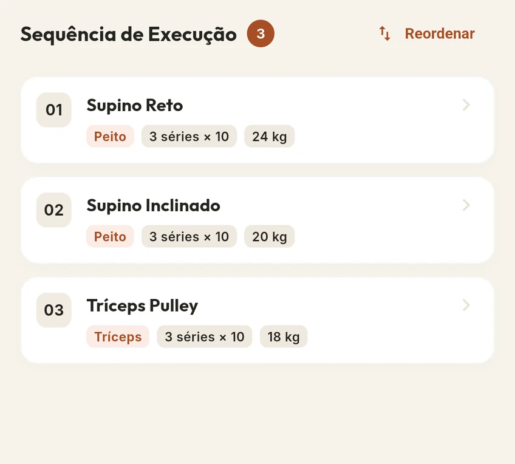

CHEGUE COM O TREINO PRONTO
01 / ANTES DE COMEÇAR
Seu plano.
Do seu jeito.
Organize sua ficha em dias de treino e saiba o que fazer quando chegar à academia.
01 / ANTES DE COMEÇAR

Escolha no catálogo ou cadastre seus próprios exercícios.